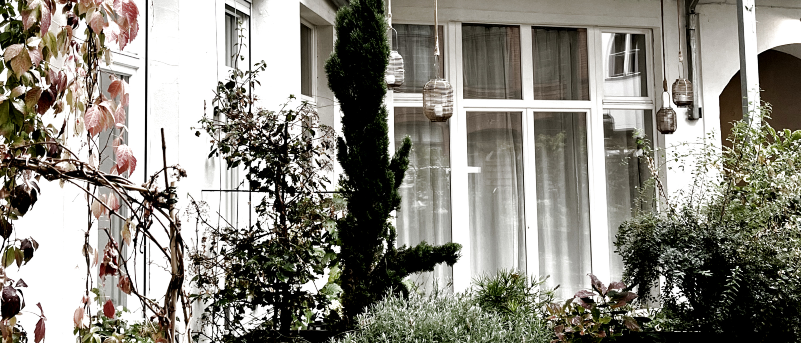
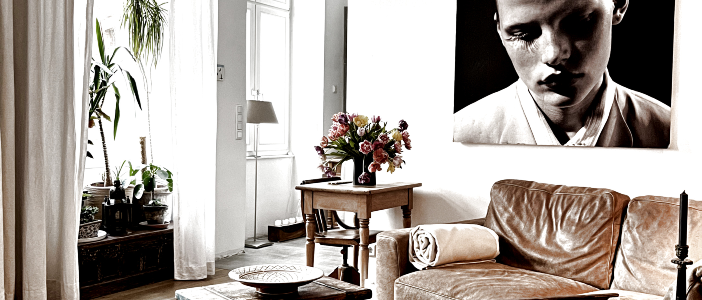
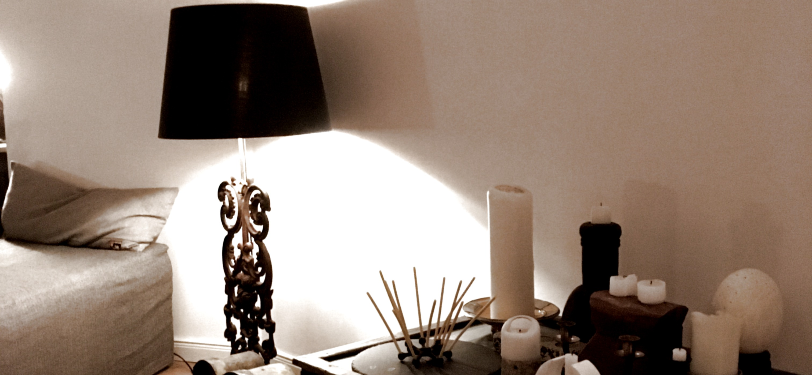
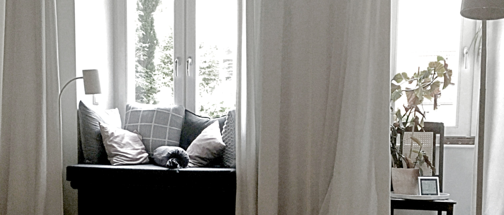
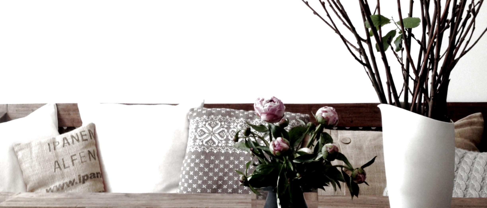
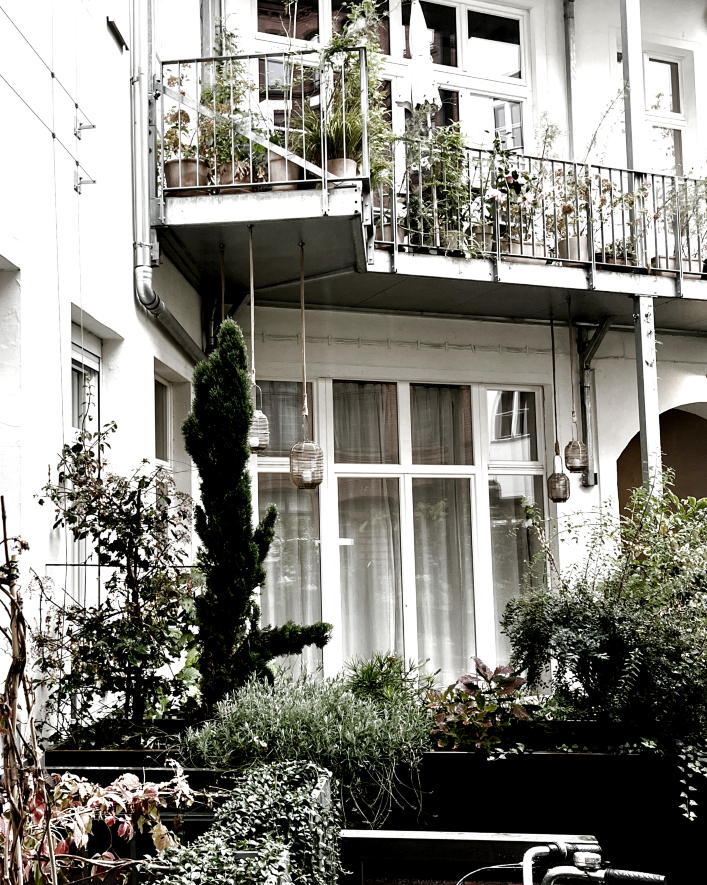
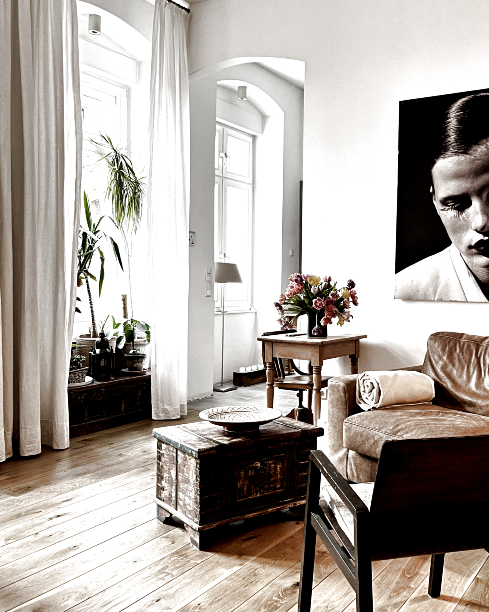
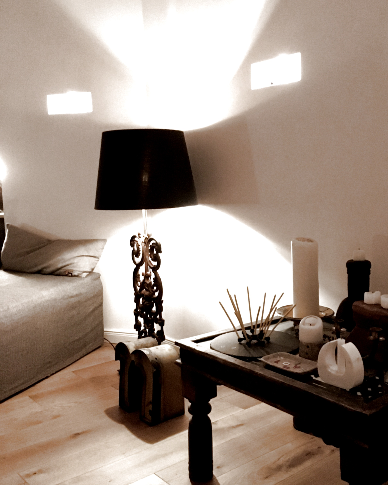
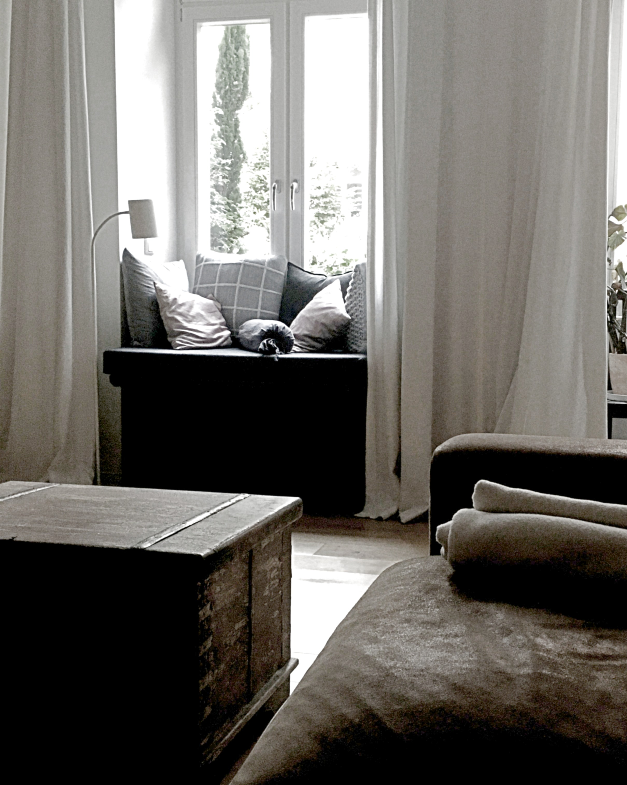
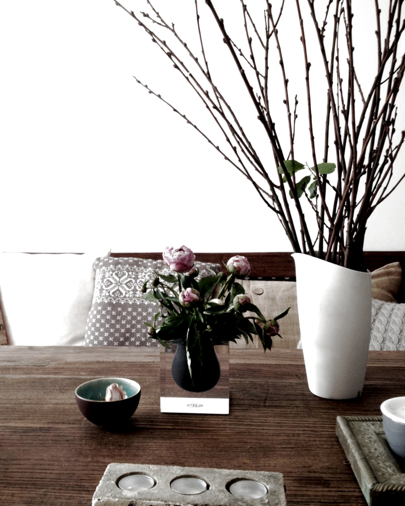

Traumhaft wohnen mit eigenem kleinen Garten im Innenhof, mittendrin im schönsten Teil von Kreuzberg. Und einer Haus- und Hofgemeinschaft, die diesen Namen auch verdient.
Die helle Wohnung verteilt sich auf zwei Einheiten: eine im Vorderhaus mit Fensterfront zur Straße und zum Innenhof, eine im Seitenflügel mit Blick in den grünen Hof.
Beide Einheiten überzeugen mit großen, offenen Räumen, die ineinander übergehen und viel Licht hereinlassen. Eine Tür verbindet die beiden Bereiche miteinander.
Vorne warten Gäste-Bad, Küchenzeile und Gartenzugang, im Seitenflügel Bad, Schlafnische, begehbarer Kleiderschrank und ebenfalls direkter Zugang zum Garten.
Erholung: Zum Durchatmen sind es nur drei Minuten in den Viktoria- oder Gleisdreieckpark, ringsherum laden Restaurants zum Verweilen ein. Der Bergmannkiez liegt sieben Minuten entfernt, das Yorck-Kino ist direkt um die Ecke.
Versorgung: Alles Wichtige ist fußläufig erreichbar: LPG, Rewe, Lidl und Aldi in direkter Nähe, die Bushaltestelle direkt vor der Tür und die S- und U-Bahn fünf Minuten entfernt.
Haus- und Hofgemeinschaft: Gemeinsame Hoffeste gehören einfach dazu – das Miteinander im Haus ist freundlich, entspannt und alles andere als anonym.
Stell Dir vor, du wandelst mit einem Becher Kaffee in der Hand durch die Räume. Hast Du schon Deinen Lieblingsplatz entdeckt?
Zwei Wohnungen wurden zu einem großzügigen Zuhause vereint – für einen Grundriss, der wirklich besonders ist.
Jede Wohnung hat ihren eigenen Charakter – diese hier passt besonders gut zu Menschen, die praktische Ausstattung und ein echtes Zuhause zu schätzen wissen.
Das macht sie aus:
Dann schreib uns kurz, wer du bist und warum du gut hierher passt.
dein_neues_zuhause_berlin [at] web.de
[at] ersetzen durch @ — Spam-Bots lesen leider auch mit.